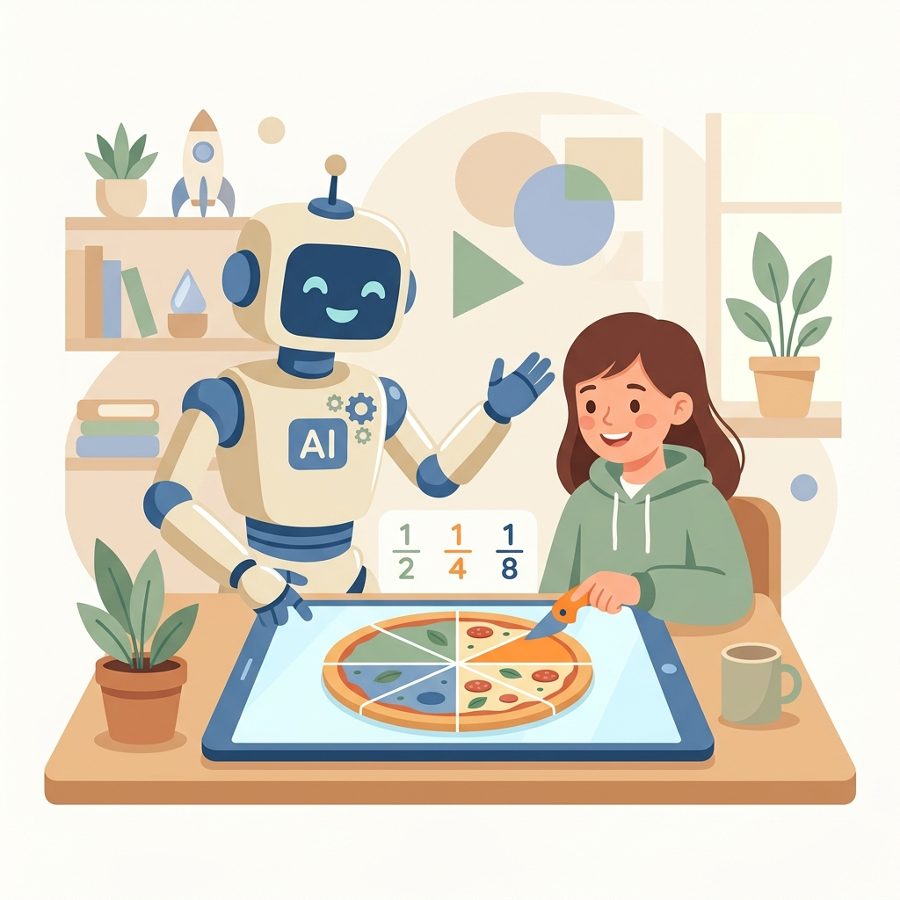

AI Agent Antigravity 研習圖卡
第五章實戰二｜教材題本分析與類似題生成
第五單元
第五單元：實戰二 —— 教材題本分析與類似題生成
讀取國語教材與檢測題本 PDF ➔ 分析題型與能力目標 ➔ 生成不照抄的類似題，並延伸成互動小測驗網頁！

學習目標
第五單元核心練習與體驗目標
在此實戰中體驗 AI Agent 如何從既有教材與題本出發，協助老師快速完成可用的練習題：
傳統痛點
老師最常需要的不是從零命題
多數時候，老師手上已有題本和教材，只是需要快速生出「能力相同、內容不同」的新題給學生練習。
任務目標
由 Antigravity 實現教材到題卷的轉換
只需下一句口語指令，AI 自主讀取 PDF、分析題型、生成類似題，並輸出學生版與教師版檔案。
輸入教材食材
國語 PDF 題本
包含三年級國語生字詞語解釋與縣市學習能力檢測題本。
自動出題成品
類似題 & 小測驗
生成三年級國語類似題、答案解析，並延伸成互動小測驗 HTML。
準備工作
本機資料夾的「食材」配置
請確保專案目錄的 cards/ch5出題/ 資料夾下已放置以下檔案：
📂 練習檔案路徑：cards/ch5出題/
| 檔案 | 用途 | Agent 要做的事 |
|---|---|---|
| 01_國小國語3下各課生字詞語解釋.pdf | 取得詞語、詞義與造句素材 | 挑選適合三年級的字詞情境 |
| 115年縣市學習能力檢測題本三年級國語科題本.pdf | 分析題型、難度與選項設計 | 生成同能力但不同內容的類似題 |
驅動指令
驅動「教材題本分析與類似題生成」Prompt
在對話框中發送以下指令，請 Agent 扮演國小國語命題與學習扶助專家：
💬 老師輸入指令：
「請讀取專案目錄下的 cards/ch5出題 資料夾。你是一位熟悉國小國語命題、閱讀理解與學習扶助的教師命題專家。
請幫我完成以下教材題本分析與類似題生成任務：
1. 讀取並分析資料夾中的兩份 PDF。
2. 整理三年級國語常見題型，例如字詞理解、語詞運用、句意判斷、段落理解與文意推論。
3. 不要照抄原題，請依照能力目標、題型結構與難度，設計不同文本但相同能力的類似題。
4. 產出 10 題選擇題與 2 題短答題，每題標示評量重點。
5. 另外產出教師版答案解析，包含正確答案、解析、學生可能錯因與補救教學建議。
6. 在專案目錄下產出 三年級國語類似題.md 與 三年級國語類似題_答案解析.md。」
後台機制
AI Agent 後台的 ReAct 協同流水線
AI 大腦在此任務中會自主規劃、讀取教材、拆解題型並輸出可直接使用的題卷：
後台第一步
1. 讀取 PDF 並建立題型地圖
Agent 先把教材與題本當成命題依據，而不是憑空想題目：
# Agent 讀取本機 PDF：
read_pdf("cards/ch5出題/01_國小國語3下各課生字詞語解釋.pdf")
read_pdf("cards/ch5出題/115年縣市學習能力檢測題本三年級國語科題本.pdf")
# Agent 建立題型地圖：
題型 = 字詞理解 / 句意判斷 / 文意推論 / 閱讀理解 / 短答表達
🌟 重點是先讀教材，再出題；不是讓 AI 憑空編一張考卷。
後台第二步
2. 抓住「類似題」真正該像的地方
類似題不是改名字或換幾個字，而是保留能力目標與題型骨架：
表面改寫 ❌
把小明改成小華，選項照搬，文本仍然相同。
這只是換皮，容易侵犯原題，也無法真正檢查同一項能力。
結構生成 🟢
能力目標相同，文本、語境、選項與答案全部重寫。
這才是適合練習、補救教學與形成性評量的類似題。
後台第三步
3. 輸出學生版與教師版兩份檔案
Agent 不只在聊天室回答，而是直接把可使用的題卷檔案生到專案資料夾：
三年級國語類似題.md，包含 10 題選擇題與 2 題短答題。三年級國語類似題_答案解析.md，附答案、解析與錯因。後台第四步
4. 延伸成互動小測驗網頁
進階挑戰讓 Agent 把剛才的題卷與答案解析，轉成學生可以直接操作的 HTML 小測驗：
🧠 題卷 ➔ 作答 ➔ 回饋的互動流程：
• 【逐題作答】：每次顯示一題，學生選完答案後按下檢查答案。
• 【即時回饋】：答對顯示鼓勵與解析，答錯提供線索提示，不直接給壓力。
• 【完成總結】：最後顯示總分、答對題數，以及建議複習的題型。
成果驗證
打開題卷、答案解析與互動網頁
AI 完成後，在專案目錄下直接產出可供老師檢查與學生使用的成品：
三年級國語類似題.md
學生可用 📄
包含 10 題選擇題、2 題短答題與每題評量重點。
三年級國語互動小測驗.html
雙擊即用 🖱️
不需伺服器，直接開啟即可逐題作答、檢查答案並看總分建議。
研習討論
從「幫我想幾題」走向真正的教材轉化
傳統 ChatGPT 可以憑空出題，但本地端 Agent 更適合把老師手上的教材與題本轉成可使用的練習材料。
🤔 研習反思討論：
1. **能力目標才是核心**：類似題最重要的不是題目看起來像，而是考的能力真的一致。
2. **老師仍是最後把關者**：AI 可以快速做初稿，但答案正確性、語文難度與學生適切性仍需老師檢核。
3. **互動網頁是延伸價值**：同一份題卷可以變成紙本練習，也可以變成形成性評量的小測驗。